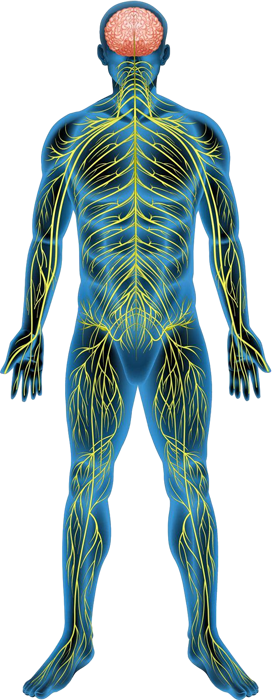

Predictive Intelligence for Norwegian Logistics
www.safelast.no

SALA is a proprietary predictive framework designed to quantify and mitigate ergonomic risks in the Norwegian transport sector, focusing on reducing long-term sickness claims (sykemelding).
Ergonomic Risk Index Calculation:
Biomechanical Surface Factor (Sf): Operating on compressed snow or ice requires up to 80% more stabilizer muscle activation. We apply a 1.8x multiplier to account for increased torque on the lumbar region (L5/S1) during unstable conditions.
Neuromuscular Fatigue (Fi): Risk scales exponentially after 6h 30m of active duty. Vibration-induced fatigue leads to delayed motor response, making manual load adjustments significantly more hazardous.
Regulatory Compliance (Arbeidsmiljøloven § 4-4): SALA is designed to fulfill the Norwegian Working Environment Act requirements, providing data-driven evidence for the Verneombud (Safety Delegate) to mandate mechanical assistance.